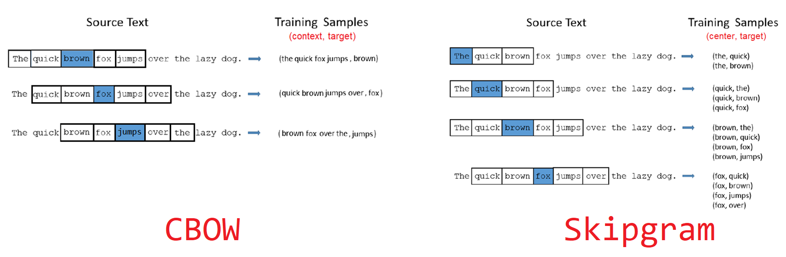
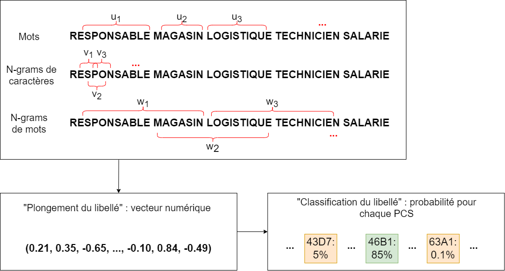
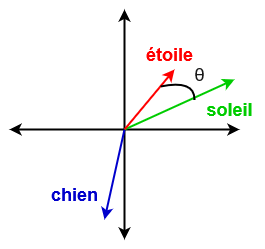

Avec le développement de la collecte automatisée d’information numérique, les données textuelles sont devenues omniprésentes, que ce soit sous la forme d’e-mails, de réponses à des enquêtes, d’articles de presse ou encore de commentaires sur les réseaux sociaux. Ces données peuvent être une source très riche d’informations mobilisable par les statisticiens, pour peu qu’ils parviennent à en faire un traitement statistique. Ainsi, une problématique récurrente dans la statistique publique consiste à classer des informations formulées en langage courant (professions, noms de produits, noms de communes, etc.) dans des nomenclatures standardisées (PCS1, NAF2, COG3…).
Or, le traitement des données textuelles pose une difficulté particulière: le langage naturel n’a pas de sens pour un ordinateur ! Un ordinateur ne travaille qu’avec des nombres, et ne peut pas manipuler directement des mots, des expressions ou des phrases. C’est pourquoi de multiples méthodes ont été développées au cours des dernières décennies pour proposer des solutions génériques permettant de traiter des corpus de données textuelles à la fois peu structurés et hétérogènes. Cet ensemble de méthodes de traitement automatisé du langage, plus connues sous l’acronyme NLP (natural langage processing) constituent encore aujourd’hui un champ de recherche particulièrement actif.
Ce billet de blog n’a pas l’ambition de proposer un aperçu des méthodes de NLP, mais simplement de présenter deux méthodes fréquemment utilisées pour transformer l’information textuelle pour la rendre compréhensible et utilisable par une machine:
Traiter un texte comme une information numérique : les approches possibles
L’approche bag of words
Le principe du bag of words est qu’on peut décrire un document comme un dictionnaire de mots (un sac de mots) dans lequel on pioche plus ou moins fréquemment un terme en fonction de son nombre d’occurrences.
La manière la plus simple de transformer des phrases ou des libellés textuels en une information numérique est de passer par un objet que l’on appelle la matrice document-terme. L’idée est de compter le nombre de fois où les mots (les termes, en colonne) sont présents dans chaque phrase ou libellé (le document, en ligne). Cette matrice fournit alors une représentation numérique des données textuelles.
Considérons un corpus constitué des trois phrases suivantes :
- _“La pratique du tricot et du crochet_”
- “Transmettre la passion du timbre”
- “Vivre de sa passion”
La matrice document-terme associée à ce corpus est la suivante :
| crochet | de | du | et | la | passion | pratique | sa | timbre | transmettre | tricot | vivre | |
|---|---|---|---|---|---|---|---|---|---|---|---|---|
| La pratique du tricot et du crochet | 1 | 0 | 2 | 1 | 1 | 0 | 1 | 0 | 0 | 0 | 1 | 0 |
| Transmettre sa passion du timbre | 0 | 0 | 1 | 0 | 0 | 1 | 0 | 1 | 1 | 1 | 0 | 0 |
| Vivre de sa passion | 0 | 1 | 0 | 0 | 0 | 1 | 0 | 1 | 0 | 0 | 0 | 1 |
Mission accomplie ! 🎉 Chaque phrase du corpus est associée à un vecteur numérique.
Il est maintenant possible de manipuler cette matrice comme des données tabulaires classiques. Par exemple, on pourrait appliquer l’un des algorithmes usuels de classification (régression logistique, forêt aléatoire, gradient boosting, etc.) pour classer ces phrases dans des catégories.
L’approche bag-of-words répond donc au besoin initial de transformer les données pour les rendre manipulables par une machine, en représentant les données textuelles sous la forme d’une matrice document-terme. Cette approche présente néanmoins une limite: elle traite tous les termes de façon indépendante et ne restitue pas la proximité de certains termes. Par exemple, rien dans la matrice document-terme de l’exemple précédent n’indique que les termes ’tricot” et “crochet” relèvent du même champ lexical. Un autre type de représentation plus complexe et plus riche constitue souvent comme une meilleure option : le plongement lexical.
Le plongement lexical
Le plongement lexical (word embedding en anglais) consiste à projeter l’ensemble des termes qui apparaissent dans le corpus dans un espace numérique à \(n\) dimensions. Chaque mot est représenté par un vecteur de taille fixe (comprenant \(n\) nombres), de façon à ce que deux mots dont le sens est proche possèdent des représentations numériques proches. Ainsi les mots « chat » et « chaton » devraient avoir des vecteurs de plongement assez similaires, eux-mêmes également assez proches de celui du mot « chien » et plus éloignés de la représentation du mot « maison ».

Chacune des \(n\) composantes va encoder des informations différentes, comme le fait d’être un être vivant ou un objet, le genre, l’âge, le niveau d’abstraction, etc. C’est pour cette raison que des termes appartenant au même champ lexical auront des représentations numériquement proches. En pratique, les vecteurs de plongement ont des dizaines voire des centaines de composantes et il est impossible d’associer à chacune une interprétation univoque : toutes les notions s’entremêlent, mais chaque composante a un rôle à jouer.
Le plongement lexical possède deux avantages par rapport à l’approche bag of words. D’une part, il fournit une représentation dense des termes, qui est plus adaptée aux algorithmes d’apprentissage statistique que la représentation creuse (matrice contenant beaucoup de zéros) de l’approche bag of words. D’autre part, les opérations mathématiques ont un sens sur les vecteurs du plongement. C’est là la magie du plongement lexical: il devient possible de faire des mathématiques avec les mots. Ainsi par exemple, les vecteurs résultant de la différence entre les représentations des mots « femme » et « homme » d’une part, et des mots « reine » et « roi » d’autre part, devraient être proches, car conceptuellement ces couples de mots sont régis par la même relation : un changement de genre.
Cette formule, souvent résumée sous la forme,
\[\text{king} - \text{man} + \text{woman} ≈ \text{queen}\]
a assuré le succès des embeddings, car elle permet à une machine d’appréhender les relations logiques entre les mots.
Jusqu’ici, nous avons parlé du plongement de mots, mais comment obtenir le plongement d’un libellé textuel ? Une possibilité est de considérer tous les mots qui composent le libellé et de calculer la moyenne de leurs vecteurs de plongement.
Construction d’un plongement lexical
Un plongement lexical se construit en parcourant un grand corpus de textes et en repérant les mots qui apparaissent souvent dans le même contexte. L’ensemble des articles Wikipedia est un des corpus de prédilection des personnes ayant construit des plongements lexicaux. Il comporte en effet des phrases complètes, contrairement à des informations issues de commentaires de réseaux sociaux, et propose des rapprochements intéressants entre des personnes, des lieux, etc.
Le contexte d’un mot est défini par une fenêtre de taille fixe autour de ce mot. La taille de la fenêtre est un paramètre de la construction de l’embedding. Le corpus fournit un grand ensemble d’exemples mots-contexte, qui peuvent servir à entraîner un réseau de neurones.
Plus précisément, il existe deux approches :
- Continuous bag of words (CBOW), où le modèle est entraîné à prédire un mot à partir de son contexte ;
- Skip-gram, où le modèle tente de prédire le contexte à partir d’un seul mot.

Algorithmes célèbres
La méthode de construction d’un plongement lexical présentée ci-dessus est celle de l’algorithme Word2Vec. Il s’agit d’un modèle open-source développé par une équipe de Google en 2013. Word2Vec a été le pionnier en termes de modèles de plongement lexical.
Le modèle GloVe constitue un autre exemple4. Développé en 2014 à Stanford, ce modèle ne repose pas sur des réseaux de neurones mais sur la construction d’une grande matrice de co-occurrences de mots. Pour chaque mot, il s’agit de calculer les fréquences d’apparition des autres mots dans une fenêtre de taille fixe autour de lui. La matrice de co-occurrences obtenue est ensuite factorisée par une décomposition en valeurs singulières. Il est également possible de produire des plongements de mots à partir du modèle de langage BERT, développé par Google en 2019, dont il existe des déclinaisons dans différentes langues, notamment en Français (les modèles CamemBERT ou FlauBERT)
Enfin, le modèle FastText, développé en 2016 par une équipe de Facebook, fonctionne de façon similaire à Word2Vec mais se distingue particulièrement sur deux points :
- En plus des mots eux-mêmes, le modèle apprend des représentations pour les n-grams de caractères (sous-séquences de caractères de taille \(n\), par exemple « tar », « art » et « rte » sont les trigrammes du mot « tarte »), ce qui le rend notamment robuste aux variations d’orthographe ;
- Le modèle a été optimisé pour que son entraînement soit particulièrement rapide.
A l’Insee, plusieurs modèles de classification de libellés textuels dans des nomenclatures reposent sur l’algorithme de plongement lexical FastText.

Bonus : le plongement lexical en version ludique
Le résultat d’un plongement lexical peut avoir de nombreux usages. Il rend notamment possible le calcul de la proximité entre deux mots quelconques.
Une manière de procéder est de calculer la similarité cosinus entre les vecteurs de plongement des deux mots. Plus précisément, la similarité entre deux mots de représentations vectorielles \(u\) et \(v\) est définie comme le cosinus de leur angle \( \) : \[cos(\theta) = \frac{u \cdot v}{\lVert u\rVert \lVert v\rVert}\]

Le calcul de la proximité entre les mots est à la base du jeu cemantix. Le principe est proche du jeu Wordle mais s’en distingue sur un point : il y a certes un mot à trouver chaque jour et il s’agit de faire des propositions de mots mais le jeu répond en donnant la proximité entre les mots proposés et le mot du jour. Ainsi, au fil des propositions, on a une vision de plus en plus précise du champ lexical associé au mot mystère, jusqu’à finalement le trouver.
Notes de bas de page
La nomenclature
PCS(professions et catégories socioprofessionnelles) sert à la codification des professions dans le recensement et les enquêtes auprès des ménages. Elle permet ainsi de classer un ensemble de professions dans une même catégorie. Par exemple, dans sa dernière version (PCS 2020), la catégorie des “Professions libérales de santé” (31A) regroupe diverses professions médicales: médecins libéraux, dentistes, psychologues, vétérinaires, pharmaciens libéraux… Une description plus complète de cette nomenclature et de son historique est disponible sur le site de l’Insee↩︎La
NAF(nomenclature d’activités française), est une nomenclature des activités économiques productives, principalement élaborée pour faciliter l’organisation de l’information économique et sociale. Il s’agit d’une typologie facilitant la représentation de l’économie sous forme de secteurs. Par exemple, au sein de l’industrie manufacturière (section C), la NAF distingue les industries alimentaires de l’industrie de l’habillement ou de l’industrie automobile. Une description plus complète de cette nomenclature et de son historique est disponible sur le site de l’Insee↩︎Le Code Officiel Géographique est le référentiel permettant de relier des adresses, des noms de communes ou encore des noms de collectivités locales à un identifiant unique. Pour plus d’informations, voir le site de l’Insee↩︎
Jeffrey Pennington, Richard Socher, and Christopher D. Manning. 2014. GloVe: Global Vectors for Word Representation↩︎
Strubell, Ganesh, and McCallum (2019) estiment que l’entraînement d’un modèle à l’état de l’art dans le domaine du NLP nécessite autant d’énergie que ce que consommeraient cinq voitures, en moyenne, au cours de l’ensemble de leur cycle de vie.↩︎
Comment utiliser ces modèles en pratique ?
Collecter à nouveau les données ayant servi à entrainer un modèle puis le ré-entraîner implique énormément de ressources, ce qui est coûteux en temps et peu écologique5.
En
Python, plusieurs librairies proposent les modèlesWord2Vec,GloVe,BERTouFastText. Le packagegensimles met toutes en œuvre à l’exception deBERT. Ce dernier est disponible surHuggingFace, la principale plateforme de mise à disposition de modèles pré-entraînés. Il est ainsi possible d’utiliserBERTavec les librairiesPyTorchouKeras. Chacun des modèles présentés possède également son package dédié, généralement développé par l’équipe de recherche ayant entraîné le modèle.En
R, il faut utiliser les packagesword2vec,text2vec(pour le modèle GloVe) etfastTextR.